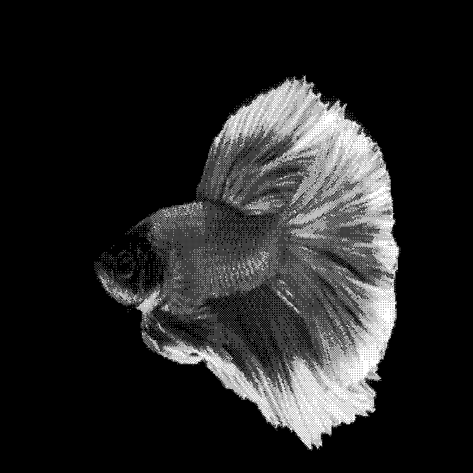
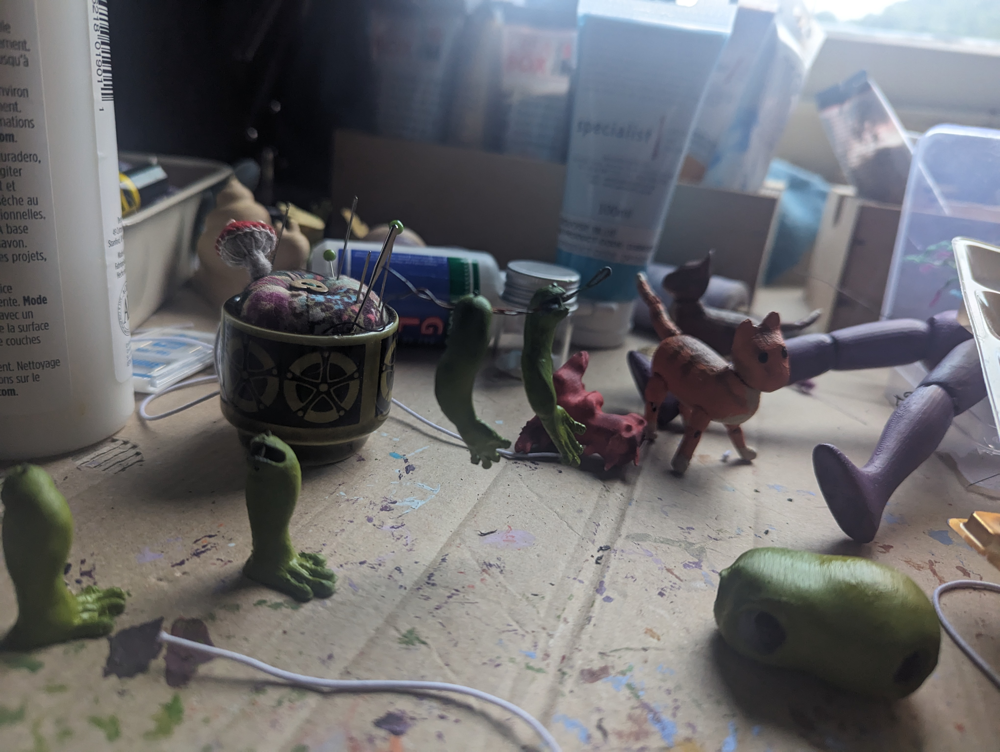
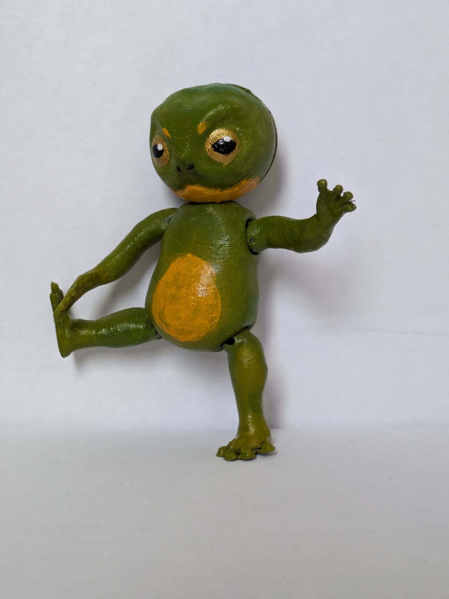
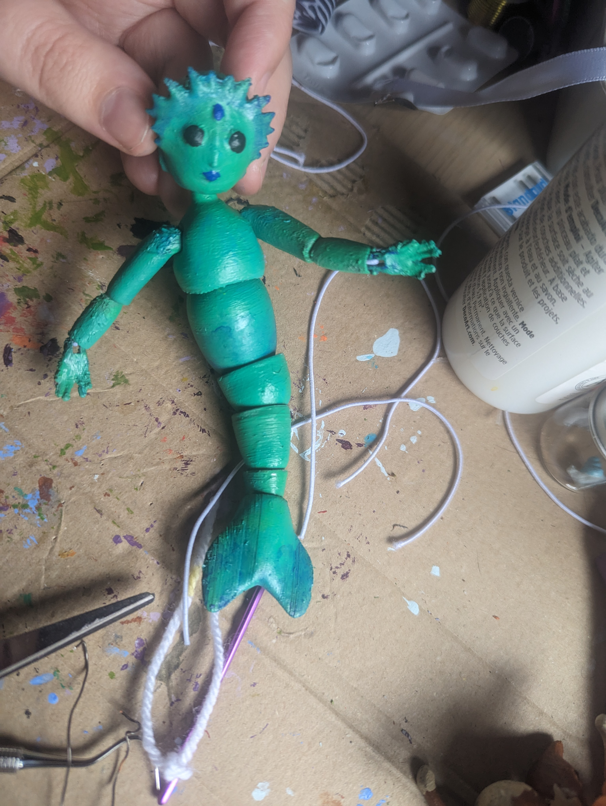

Here's a shader I wrote in GLSL that applies dithering to images!
Portfolio
I do creative coding, 3d modelling and dollmaking!
Code

Dolls
Here's an articulated frog doll, based off Sylvanian families and Dollightful's rabbit doll!
Here's an articulated mermaid doll I used to practice my arm joints!
